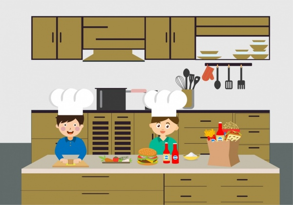
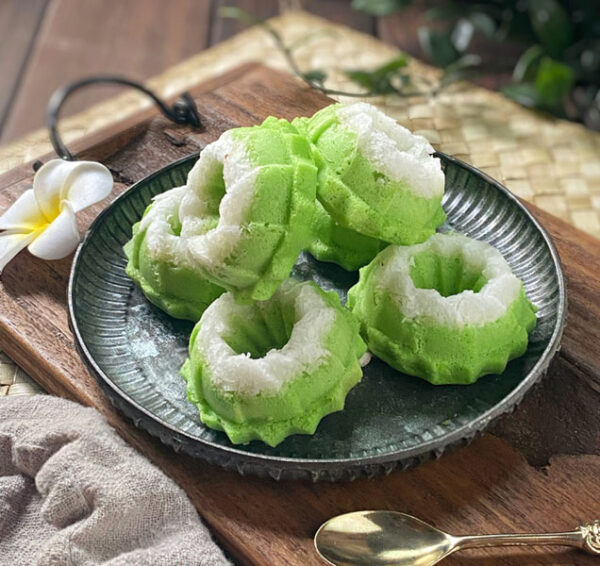

Ketika Matematika Bertemu Seni Kuliner
Koki profesional tidak hanya membutuhkan kreativitas, tetapi juga ketepatan matematis dalam setiap hidangan yang mereka buat. Dari mengukur bahan hingga menentukan waktu memasak, matematika adalah alat penting di dapur restoran.
Pecahan, perbandingan, konversi satuan, dan perhitungan waktu adalah beberapa konsep matematika yang digunakan setiap hari oleh para koki. Tanpa pemahaman ini, resep yang sempurna tidak mungkin tercipta.
Di dunia kuliner tingkat tinggi, bahkan geometri dan perhitungan presisi menjadi bagian dari presentasi hidangan.

Aplikasi Matematika di Dapur Profesional
Berbagai cara matematika digunakan dalam profesi koki
Pengukuran Bahan
Koki menggunakan pecahan dan perbandingan untuk mengukur bahan dengan tepat, terutama saat menyesuaikan porsi resep.
Manajemen Waktu
Perhitungan waktu yang tepat untuk setiap tahap memasak memastikan semua hidangan siap bersamaan dengan kualitas terbaik.
Kontrol Suhu
Konversi antara Celsius dan Fahrenheit serta perhitungan waktu pemasakan berdasarkan suhu adalah keterampilan matematis penting.
Biaya dan Profit
Koki eksekutif menghitung biaya bahan, harga jual, dan profit margin untuk memastikan keberlanjutan bisnis restoran.
Presentasi Hidangan
Prinsip geometri dan simetri digunakan untuk menata makanan di piring secara estetis dan seimbang.
Skala Resep
Menyesuaikan resep untuk jumlah tamu yang berbeda membutuhkan perhitungan proporsi yang akurat.
Contoh Nyata dalam Profesi Koki
Bagaimana matematika diterapkan dalam situasi nyata
Menyesuaikan Resep
Sebuah resep kue dirancang untuk 8 orang, tetapi Anda perlu membuatnya untuk 12 orang. Resep asli membutuhkan:
- 2 1/4 cangkir tepung
- 1 1/2 sendok teh baking powder
- 3/4 cangkir gula
Berapa jumlah masing-masing bahan yang dibutuhkan untuk 12 orang?

Konsep Matematika:
Ini adalah masalah perbandingan dan perkalian pecahan. Dari 8 ke 12 orang adalah peningkatan 1.5× (karena 12 ÷ 8 = 1.5). Jadi setiap bahan harus dikalikan 1.5.
Perhitungan Waktu Memasak
Sebuah ayam dengan berat 1.5 kg membutuhkan waktu memasak 45 menit. Berapa waktu yang dibutuhkan untuk ayam dengan berat 2.2 kg jika waktu memasak bertambah 15 menit per 0.5 kg setelah berat pertama?

Konsep Matematika:
Ini melibatkan perhitungan proporsi dan penambahan bertahap. Dari 1.5 kg ke 2.2 kg ada selisih 0.7 kg, yang berarti 1 interval 0.5 kg dan sisa 0.2 kg.
Jalur Karir dalam Profesi Kuliner
Bagaimana matematika membantu perkembangan karir seorang koki
Commis Chef
Mengukur bahan dengan tepat sesuai resep
Chef de Partie
Mengatur waktu memasak beberapa hidangan
Sous Chef
Menghitung biaya dan kebutuhan stok
Head Chef
Membuat menu dengan perhitungan profit
Executive Chef
Analisis bisnis dan pengembangan konsep
"Matematika adalah bumbu rahasia di balik setiap hidangan sukses. Tanpa pemahaman pecahan, perbandingan, dan waktu, bahkan resep terbaik akan gagal."